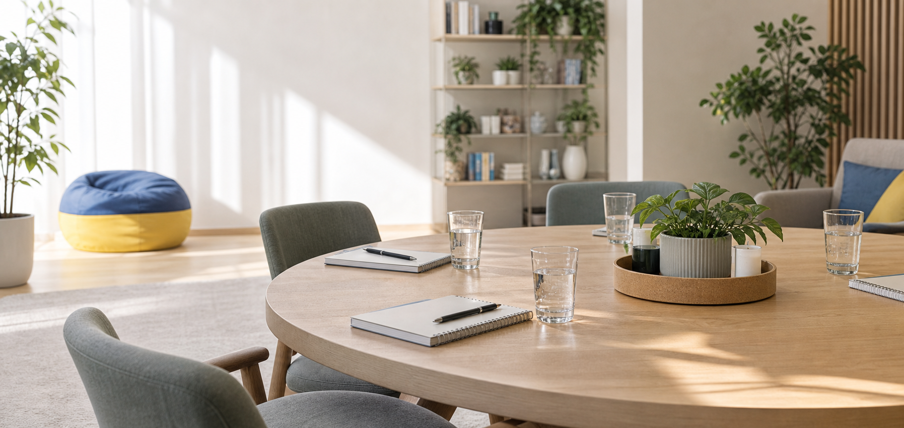
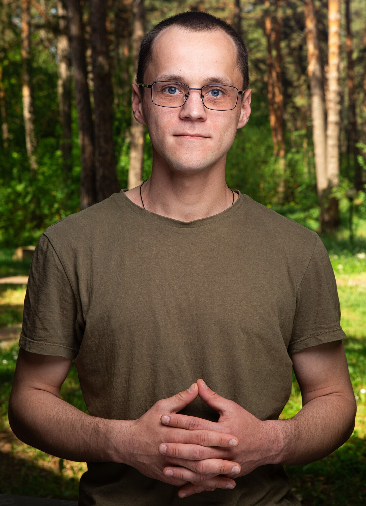
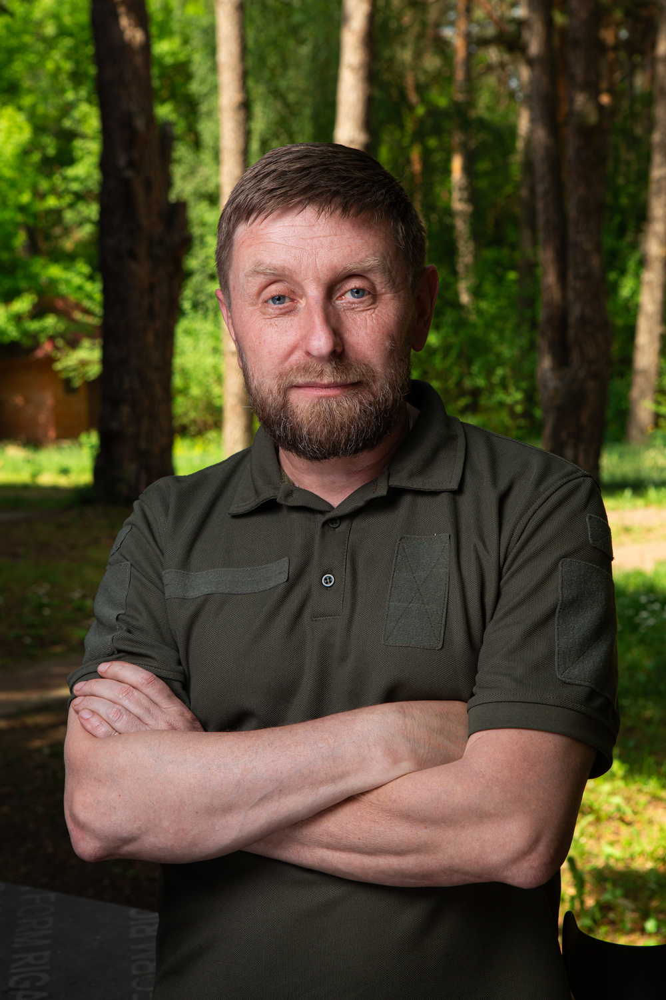

Ветерани
Для тих, хто завершив службу та повертається до цивільного життя. Допомога у переорієнтації, адаптації та пошуку нової ідентичності.

ГО «Фонд оновлення горизонту»
Фундація допомагає ветеранам та військовослужбовцям адаптуватися до мирного життя через 10-денний курс психологічної, фізичної та групової реабілітації.
Про нас та формат
Програма «Горизонт оновлення» розроблена як інтенсивний 10-денний стаціонарний курс на базі приватного комплексу у с. Глібівка. Такий формат допомагає мінімізувати вплив зовнішніх тригерів і зосередитися на системній роботі.
Для тих, хто завершив службу та повертається до цивільного життя. Допомога у переорієнтації, адаптації та пошуку нової ідентичності.
Для діючих військовослужбовців у відпустці для лікування або реабілітації. Інтенсивна психологічна та фізична підтримка для відновлення сил.
Детальна програма
Реінтеграція ідентичності, розпізнавання тригерів, контроль стресових реакцій, дихальні вправи та відновлення зв'язку між розумом і тілом.
Робота з моральною травмою, агресією, залежностями, емоційним інтелектом і пошуком здорових способів саморегуляції.
Відновлення довіри в родині, визначення нових цінностей, закріплення навичок і формування мережі довгострокової підтримки.
MVP процес
Реєстрація учасника
Ця анкета допомагає команді краще зрозуміти потреби учасника та підібрати оптимальний план відновлення. Заповнення триває до 5 хвилин, усі дані конфіденційні.
Особистий кабінет
Команда професіоналів
Успіх програми базується на щоденній злагодженій роботі фахівців з психології, медицини та реабілітації.
Щоденні індивідуальні та групові сесії для глибокого опрацювання травми.
Кінезіотерапія, мобілізація тіла, дихальні практики та фізичне відновлення.
Курс масажу для зняття хронічних м'язових затисків та розвантаження.
Моніторинг стану здоров'я і контроль виконання процедур протягом заїзду.

Засновник проєкту
Медичний напрямок, розробка та координація програм відновлення, взаємодія з профільними фахівцями, супровід учасників та контроль якості реалізації заходів. Ветеран російсько-української війни, бойовий медик.

Засновник проєкту
Розвиток партнерств, співпраця з донорами, організаційно-технічне забезпечення проєкту, логістика заходів та координація взаємодії з партнерами. Ветеран російсько-української війни.
Кабінет команди
Підтримати діяльність фонду
Благодійні внески підтримують організацію заїздів, роботу фахівців, логістику та побутові потреби учасників програми.
Партнерам і контактам
Програма є безкоштовною для учасників. Для партнерства, запитів і підтримки діяльності фонду використовуйте прямі контакти або офіційні реквізити.
Політика конфіденційності
Дані реєстрації та відповіді анкет використовуються для організації участі в програмі, супроводу учасника командою та формування знеособленої звітності. Учасник має бачити лише власні анкети.
Продакшен-версія має працювати через HTTPS, з хешуванням паролів, ролями доступу, регулярними резервними копіями та сервером у ЄС або Україні.